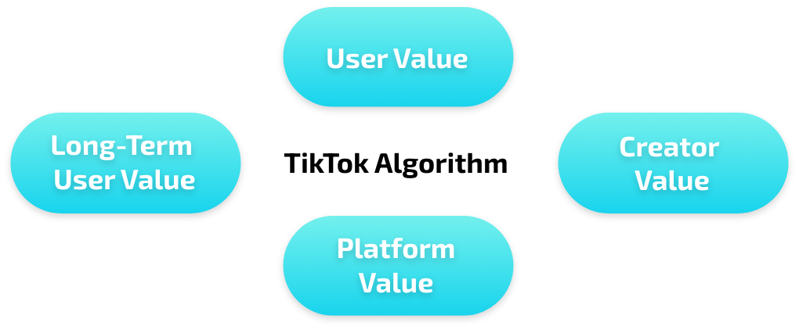
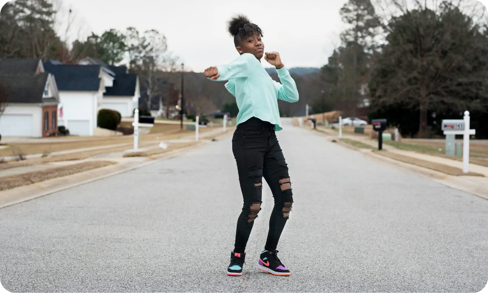
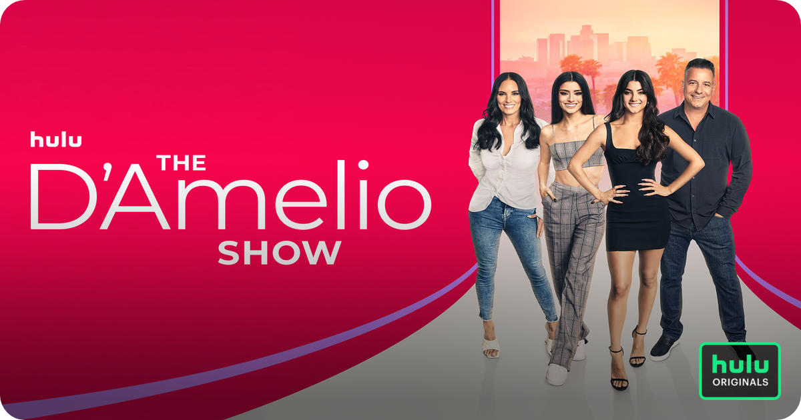
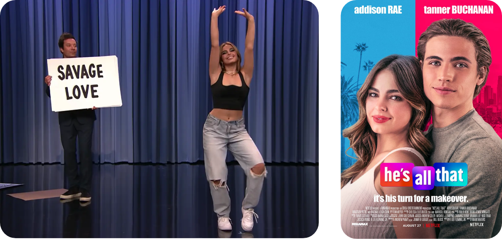

Kaitlyn Barbour, Spring 2022
Compared to other media giants (such as Facebook, Instagram, or Twitter), TikTok is relatively new. Thus, there isn’t a ton of scholarly research about TikTok, the ways that it is used, or the issues that it presents. TikTok can clearly be a valuable platform for sharing information, education, & entertainment.
However — like most social media sites — there are a lot of problems that present themselves regarding the app and its usage. This prompted me to dig into those issues, particularly those regarding race, algorithms, and surveillance that appear on TikTok.
This is by no means intended to be a comprehensive guide to the perils of TikTok, nor is it supposed to be an indictment of the platform. It is merely intended to highlight some of the issues with TikTok regarding race and surveillance technology, as well as highlighting places on which people could or should further investigate.
TikTok — like most social media companies — doesn’t allow for public review of its algorithm. However, it has publicly shared the broad outlines of its recommendation system, saying it takes into account factors including likes and comments as well as video information like captions, sounds and hashtags.
This system means that watch time is key. The algorithm tries to get people addicted rather than giving them what they really want.”
It also has been said to use a type of algorithm process called “collaborative filtering.” This system is based off of the idea that you will like similar content to people who share your interests, and creates "personalized" recommendations by showing you what other users who like the same things as you also like.
A 2021 New York Times article describes an internal company document produced by TikTok’s engineering team in Beijing. This document, called “TikTok Algo 101” lists four main goals for TikTok’s algorithm: “user value,” “long-term user value,” “creator value,” and “platform value.”
Although TikTok seems to uncover things about users that they didn’t necessarily know about themselves, in reality it’s more accurate to say that TikTok shows you where your attention already goes—or would go, if you were freed from the social norms that keep your curiosity corralled offline.... in case it wasn’t clear, TikTok’s real motivation isn’t psychoanalysis, it’s profit. The algorithm “is trying to differentiate you from … the vanilla user” to keep your attention (and keep earning money).
TikTok has a shaky history of respecting users’ privacy.
February 25, 2021 — "TikTok’s Chinese parent company ByteDance has agreed to pay $92 million in a settlement to U.S. users who are part of a class-action lawsuit alleging that the video-sharing app failed to get their consent to collect data in violation of a strict Illinois privacy law. The federal lawsuit alleged that TikTok broke the Illinois biometric privacy law, which allows suits against companies that harvest consumer data without consent, including via facial and fingerprint scanning."
Beyond violating legal restrictions on collecting user data, TikTok’s parent company ByteDance has also used user data in order to train their algorithm without users’ knowledge or consent.
In 2017, ByteDance scraped short-form videos, usernames, profile pictures, and profile descriptions from Instagram, Snapchat, and other sources and then uploaded them to one of TikTok’s predecessors called Flipagram (BuzzFeed News). Former employees say that the content was used to train the “For You” algorithm on US-based content “so that it would better reflect the preferences of US users.”
A former employee described this sort of growth tactic and the willingness to scrape user data without consent in pursuit of creating a more addictive algorithm as a symptom of a larger, industry-wide obsession with growth at any cost: “The US public and US media often attribute unethical growth strategies practiced by Chinese tech companies to ‘Chinese tech culture,’ when very often those tactics are directly copied from FAANG (Facebook, Amazon, Apple, Netflix, and Google) companies.”
Another concerning component of TikTok’s algorithm is how it recommends accounts to users, as well as TikTok’s response. Back in February 2020, Marc Faddoul a research scientist at the University of California Berkeley observed that the profiles recommended by TikTok when he followed a new account seemed very physically similar to the profile photo of the original account: “Following black men led to recommendations to follow more black men. Following white men with beards produced recommendations for more white men with beards. Following elderly people spawned recommendations for other elderly people. And on and on.” (Vox)
Some have been able to replicate his results, while others have noted that the recommendations they saw shared an interest instead of appearances. However, it raises the question of how the algorithm is trained and what factors go into recommendations on social media platforms such as TikTok. Why would following someone with certain demographic traits lead to recommendations for users that look similar to them and how can these recommendations lead to selective information environments?
When asked about this, TikTok responded, saying that “Our recommendation of accounts to follow is based on user behavior: users who follow account A also follow account B, so if you follow A you are likely to also want to follow B.”
TikTok’s response blames recommendation results on users instead of their algorithm. Yet, it is TikTok’s algorithm that is designed to keep users engaged and following new users by recommending content that will match their interests and keep them scrolling in order to maximize profit.
The dominant notion of search results as being both “objective” and “popular” makes it seem as if misogynist or racist search results are a simple mirror of the collective. Not only do problematic search results seem “normal,” but they seem completely unavoidable as well, even though these ideas have been thoroughly debunked by scholars.
By blaming biased search or recommendation results on the algorithm, TikTok is upholding the false idea that technology is neutral and objective, instead of something that can be leveraged by companies in pursuit of goals such as profit or upholding structures of power.
How does TikTok’s desire for maximizing profit and growth manifest itself in the algorithm?
What choices are made in the name of growth and profitability?
How do these choices manifest themselves?
How do those choices uphold structures of power and oppression on the platform and beyond?
One key way in which racial disparities appear on TikTok is the opportunities that creators gain. Many Black creators of some of the most viral dance trends have not been given the same opportunities as their white TikTok counterparts. (Insider).
TikTok’s use of sounds helps dance trends spread like wildfire across the app. In order to find the original creator of a dance, users must search through the videos under a sound where sometimes the original video is marked as such. However, not all dances are marked as the original, and because TikTok’s sounds do not have any sort or filter function, finding the first post with a dance under a popular sound can be incredibly difficult. TikTok does not have any requirement to credit a dance’s creator nor any automated way to make this happen. Only within the past year did TikTok even enable the option to tag users in a video; previously any credits had to take up space within the limited characters of a caption or in a comment.
But, missing out on credit isn’t just about losing recognition for one’s work: “To be robbed of credit on TikTok is to be robbed of real opportunities. In 2020, virality means income: Creators of popular dances… often amass large online followings and become influencers themselves. That, in turn, opens the door to brand deals, media opportunities… etc.” (NYT)
Perhaps the most notable example of the unequal racial opportunities distributed across the plaform is that of Jalaiah Harmon.
Jalaiah Harmon is a Black teenager from Atlanta who was 14 at the time her dance “Renegade” went viral on TikTok. She created the dance in September 2019 on another app, before it was brought to TikTok in October by another user. Before long, an up-and-coming 15 year old white TikToker named Charli D’Amelio had posted a video of herself doing it, as did many other TikTok influencers. None gave Jalaiah credit.
Very few individuals even knew the original creator of the dance until months after it had blown up, when a February 2020 article from the New York Times explained the dance’s creator and gave her recognition. Since the article, Harmon has been the subject of her own docuseries, yet has nowhere near the recognition of other TikTokers who profited off of Harmon’s dance.
Charli D’Amelio, who rose to fame partially as a result of her videos to Renegade, is still the most-followed TikToker in the world. D’Amelio now stars in a Hulu Reality show with her family.
Another well-known example is that of Addison Rae, who has been a popular TikToker known for her dances since at least late 2019.
In early 2021, Jimmy Fallon hosted Addison Rae on his show for a segment where she “performed” various TikTok dances. However, she was not the creator of any of the dances herself, and their creators — many of whom are Black — were absent and not credited on screen (though their handles were listed in the video description of the YouTube upload).
This sparked a debate over TikTok, race, credit, and pop culture. Similar to the different treatment between Jalaiah Harmon and Charli D’Amelio, Addison Rae was given opportunities to profit off of the work of Black creators without acknowledging where those trends came from and who made them.
Addison Rae is still TikTok’s third most followed creator, and made nearly $5 million in 2020 from TikTok alone, “getting views from videos she made recreating dances from black choreographers” (BBC). She recently starred in Netflix’s 2021 rom-com release “He’s All That” and has reportedly signed a multi-movie deal with Netflix (Insider).
Now, TikTok would probably argue that these unequal results are a result of processes that are exterior to the app, that it’s not the app’s fault that D’Amelio and Rae got famous while Harmon went unnoticed. Yet, there are steps that could be taken to give Black creators the credit they deserve on the app, which could lead to more opportunities off the app.
The animating force of the New Jim Code is that tech designers encode judgments into technical systems but claim that the racist results of their designs are entirely exterior to the encoding process.
Some technologies fail to see Blackness, while others render Black people hypervisible and expose them to systems of racial surveillance.
Black users have consistently had to fight for visibility on TikTok in terms of getting credit for creating trends. Yet beyond that, Black creators have had to fight against TikTok’s “Community Guidelines” themselves to share content.
In the midst of many Black Lives Matter protests in June 2020, users who typed #BlackLivesMatter or #GeorgeFloyd into their video captions on the editing screen were told the hashtag had zero views (CNBC). TikTok later apologized for the “technical glitch” that occurred to make it appear as if those hashtags had no views. TikTok stated that posts with these hashtags actually had over 2 billion views.
There have also been several instances where creators found that terms such as “Black Lives Matter’’ and “Black people” were being suppressed by automated moderation (NPR). One Black creator, Ziggi Tyler, found that typing phrases like “Black Lives Matter” or “Black Success” in his Marketplace creator bio would flag them as inappropriate content. However, “white supremacy” or “white success” did not trigger this same warning (Vox).
TikTok’s explanation was that the app was mistakenly flagging phrases like “Black Lives Matter" “because its hate speech detector is triggered by a combination of words involving the words “Black” and “audience” — because “audience” contains the word “die” in it. Yet, as Tyler says: “Regardless of what the algorithm is and how it picked up, somebody had to program that algorithm… And if [the problem] is the algorithm, and the marketplace has been available since [2020], why wasn’t this a conversation you had with your team, knowing there have been racial controversies?”
Computer systems are a part of the larger matrix of systemic racism. Just as legal codes are granted an allure of objectivity – “justice is (color)blind” goes the fiction – there is enormous mystique around computer codes, which hides the human biases involved in technical design.
How does TikTok’s desire for maximizing profit and growth manifest itself in the algorithm?
How does TikTok’s design lead to unequal opportunities for creators on and off the app?
How does visibility on the platform lead to surveillance?
What choices are obscured by language that blames human biases on the algorithm and computer code?
Knowing that there are problems regarding TikTok’s algorithm, race, and surveillance, how have individuals adapted to this media landscape? What methods of communication have been developed to adjust to content moderation algorithms? What tactics are used to push back against technology that oppresses?
TikTok’s Community Guidelines policies appear to be very similar to those of other social media sites: it does not allow content that contains violence and hateful behavior, harassment and bullying, adult nudity and sexual activities, graphic content, misleading or infringing content, and content that may be harmful to minors. However, TikTok relies very heavily on content moderation in order to keep the platform free of unwanted language or behavior. TikTok’s algorithm in particular is likely to flag videos that contain words that could be problematic for its community guidelines, regardless of context.
One way that creators and users alike have adapted to content moderation technology is through the creation of “algospeak.” Algospeak refers to code words or turns of phrase users have adopted in an effort to create a brand-safe lexicon that will avoid getting their posts removed or down-ranked by content moderation systems (Washington Post).
Algorithms are causing human language to reroute around them in real time. I’m listening to this youtuber say things like “the bad guy unalived his minions” because words like “kill” are associated with demonetization
— badidea 🪐 (@0xabad1dea) December 15, 2021
For example, mentions of suicide or self-harm could fall under the category of graphic content, educational content about sex, pregnancy, and menstrual cycles could be seen as promoting adult nudity or sexual activities. Others have found that discussions of racism and homophobia have been flagged or downranked, despite not explicitly violating any of the community guidelines policies.
As a result, creators on TikTok have adopted various “algospeak” code words:
While algospeak is used as a way to try to get around content moderation systems — to sometimes comical effect — it points at a darker part of TikTok’s algorithm. Not only is TikTok not transparent about what it is trying to censor, users have to try their best to avoid censorship, TikTok then tries to filter those new code words, and the cycle continues in “a game of whack-a-mole.”
The reality is that tech companies have been using automated tools to moderate content for a really long time and while it’s touted as this sophisticated machine learning, it’s often just a list of words they think are problematic
Beyond adapting to content moderation systems and manipulating language to avoid censorship, creators have taken a more active approach to dealing with oppressive systems, including boycotting TikTok and striking from creating content for the app.
Most recently, in July 2021, Black creators on TikTok held a strike to draw attention to the lack of credit that they receive (Washington Post). In particular, Black TikTokers refused to choreograph to Rapper Megan Thee Stallion’s latest release at the time — “Thot Shit.” The strike led to many less videos being created at the time which highlighted the strike and brought attention to the issue.
TikTok released a statement highlighting its commitment to diversity and inclusion, saying: “Over the past year, our teams have continued working to elevate and support Black voices and causes, while fostering an inclusive environment on our platform and within our workplace.” It also said that it was training staff "to better understand more nuanced content like culture appropriation and slurs" and endeavoured to give users "tools to empower our community," (BBC) but did not directly mention the strike itself.
Yet, months after the strike, many of these same problems persist on the platform, and Black creators still struggle to recieve credit for their work.
TikTok itself says it is working to rectify the issues with the platform, including increasing equity efforts, bringing in more Black advisors, acknowledging intersectional Black experiences on social media, meeting with Black creators and investing in Black creatives on the app.
All of these efforts represent important steps in creating a more equitable experience on the app. However, it bears asking if these steps will be enough when the algorithm is intended to hook audiences at whatever cost in order to maximize profit. Such language continues to place the blame for racist results on things that are exterior to technology or technical glitches and continue the false perception that technology itself is neutral and objective when it is far from it.
The more our lives become intertwined and caught up in tech and social media algorithms, the more it’s worth trying to understand and unpack just how those algorithms work. Who becomes viral, and why? Who gets harassed, who gets defended, and what are the lasting repercussions? And how does the internet both obscure and exacerbate the racial and gender dynamics that already animate so much of our social interactions?